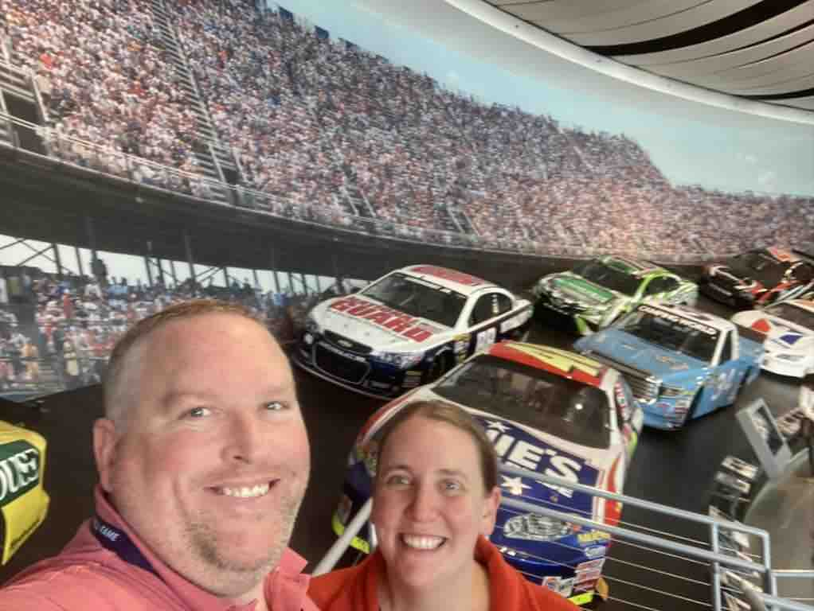

About Me
My name is John Stewart. I lived in Utah most of my life, but recently moved to Georgia! I graduated from BYU-Provo with a degree in Computer Science, and now I'm at BYU-Idaho to learn about web development. A lot has changed in my industry since I graduated and it's time to learn additional skills.
The Wormsloe State Historic Site, shown in the photo, was established by one of Georgia's colonial founders, Noble Jones. Georgia is one of the original 13 colonies and the 8th most populated state in the United States. It is known as the Peach State, but also produces a variety of other items such as peacans and peanuts. It has a milder climate than Florida, but still manages to avoid snow storms. It is a wonderful place to live and visit!